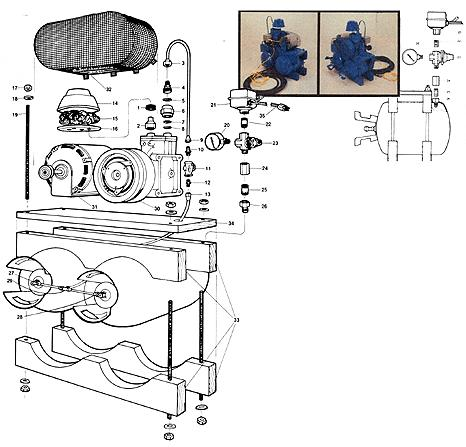
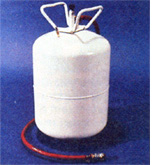

Sooner or later every home workshop needs a good little air compressor. Nothing fancy, you understand. Just a rugged piece of equipment that will put out air at a pressure of up to, say, 80 pounds per square inch. Something that can handle all those paint spraying, sandblasting, air-blast cleaning, portable pneumatic tool, and "keep the tires inflated on the family bus" jobs that constantly crop up.
Everybody with a home shop knows that. But not everybody with a basement or garage workshop finds him- or herself able to shell out the $100 to $150 or more that a good little air compressor costs these days. And that's exactly why Dennis Burkholder and Emerson Smyers-two of MOTHER's research staff-recently scratched their heads, went to work, and came up with this nifty air compressor that any home craftsman should be able to whip together from mostly "junk" for less than $60.
Now it should be noted, right in the beginning, that the machine you see here consists of three basic parts: [1] duotanks to hold air after it's compressed, [2] a pump to do that compressing, and [3] an electric motor which turns the pump . . . all connected with the proper valves, controls, air lines, and other hardware.
And it should further be noted that there are untold numbers of storage tanks of countless design ... an equally vast selection of discarded air pumps . . . and an incredible variety of old electric motors-all of which are suitable "raw materials" for a project of this nature-quietly rusting away in carports, cellars, attics, storage rooms, back yards, junk shops, and scrap piles in every part of the country right now.
And yet another point should be noted too: There undoubtedly are as many ways to combine any randomly selected tank, pump, and motor into a serviceable air compressor . . . as there are home shops that can use such a piece of machinery. There is-in other words-no "set" or "best" way to recycle a castoff tank or tanks, pump, and motor into an air compressor. But for an example of just how easy the job can be done . . . well, read on!
The single item most central to any air compression and storage system-the "heart" of the machine-is its air pump. And in this case, that pump is the air conditioning compressor taken from a junked automobile. (HINT: The folks in the auto air conditioning business that Dennis and Emerson talked to say that compressors from Fords and Chryslers, or any vehicle air conditioner manufactured by Borg-Warner will be the easiest to convert. They also point out that you'll probably pick up one of the units for less money if you buy it from a scrap metal dealer, instead of an auto parts junkyard.)
Once MOTHER'S two mechanics had found a $2.00 auto air conditioner compressor to their liking, they cleaned the unit off and fiddled around with it until they had determined which of its two ports was "intake" and which was "exhaust". Next they tested the pump's compression (merely by "motoring" its drive pulley over by hand) and-finding it soundadded enough 30-weight oil to the compressor's crankcase to bring the lubricant's level up to just the bottom of the pump's crankshaft.
(SPECIAL NOTE: It is possible-before the magnetic clutch of the compressor is permanently locked to the pulley and flywheel, as explained - in the next paragraph-to handspin just the pulley and flywheel, observe that the compressor pumps no air, and think the unit is defective when-in fact-it isn't. Make certain, then, as you conduct this test that you grab the pulley/flywheel/clutch assembly in such a way that you turn it all . . . including the clutch.)
The pulley, flywheel, and magnetic clutch of an automobile air conditioner compressor are usually combined into a single integrated assembly ... where each of the three components does its separate thing. (The pulley and flywheel turn all the time the vehicle's engine is running. The clutch, however, remains disengaged from the other two components until a switch is flipped in the car's or truck's passenger compartment and the air conditioner is "turned on". In reality, this "turning on" consists of nothing but closing an electrical circuit which activates the magnetic clutch ... thereby causing it to "lock onto" the spinning flywheel ... thereby causing the clutchand the air conditioner drive shaft attached to it-to spin also.)
That's all very fine for an automobile air conditioner, of course, but you don't need or want a disengageable clutch on your shop compressor (it's far easier and more efficient just to plug the unit in when you want it to run and unplug it when you don't). Which is the reason why MOTHER's researchers solidly spot-welded their compressor's clutch to the rest of the flywheel/pulley assembly. (If you prefer, you can drill and then either pin or bolt yours together.)
MOTHER'S helpers then fitted the air intake on their pump with a rudimentary cleaner made of a plastic "butter tub" filled with some scrap furnace filter material (a foam rubber sponge would have worked just about as well).
The storage tanks on Dennis and Emerson's rig are two Freon pressure cylinders they obtained free from a local air conditioning and refrigeration shop. Federal law prohibits anyone from refilling these tanks with Freon and the containers ordinarily are just thrown away. Howeversince the bottles are certified for pressures up to 250 psi (which puts the 80 psi specified here well within their safety limits) and the tanks are available nearly everywhere free for the asking-there's absolutely no reason why the cylinders shouldn't be reborn as an air compressor's pressure bottles.
The tanks were fastened together with a wooden "yoke" (see illustration) bolted together on all four corners with threaded rod. This yoke also serves as a mount for the finished compressor's air pump, drive motor, and other hardware.
On one of the pressure tanks (it really doesn't matter which) a half-inch hole was drilled as an air outlet and a half-inch pipe fitting silver-soldered into the opening. Then Burkholder and Smyers securely coupled on an "air compressor tank manifold with super-seal ball-valve outlet and built-in safety valve" which they purchased at a local hardware store.
Next-and this was the touch which turned MOTHER'S homemade air compressor into a rig fully as good as any store-bought unitthe boys mounted a pressure gauge and a pressure switch (also bought from the local hardware) on the tank manifold.
The gauge, of course, allows its users to keep an eye on the psi which builds up in the air compressor's tanks. And the switch functions as a brain for the whole shootin' match: As long as the compressor is plugged in, the switch will automatically turn its motor on whenever the pressure in the tanks drops below 60 psi and then just as automatically shut it off when the pressure climbs back up to 80 psi.
AND HERE'S AN IMPORTANT ADDITIONAL SAFETY POINT: Just to make absolutely certain that no one can ever inadvertently close off the tank fitted with the safety valve and pressure switch (thereby allowing the motor to run the compressor and build up a dangerous amount of pressure in the other cylinder) . . . MOTHER'S safetyminded researchers finished off their tank installation by fully opening the valves on both bottles and then cutting off the handles so that those valves can never be closed again. MAKE SURE YOU DO THE SAME.
MOTHER's merry mechanics completed their handy little rig by using one-quarter inch copper tubing to connect the exhaust side of the air pump-through a one-way check valve-to the inlet fittings on the pressure bottles (make absolutely certain the valve "points" from the pump and to the tanks).
(And here's why you need that one-way valve anyway: The Freon pump on an automobile air conditioning unit usually contains a built-in "bleed-off" valve which opens at the end of each operating cycle and releases any "leftover" pressure from the compressor so that it can be started easier at the beginning of its next cycle. But you don't want this bleed-off valve within the pump itself to siphon away the pressure in your air bottles every time your compressor is shut off by its automatic switch. And that's just what the check valveinstalled between the air tanks and the pump-prevents.)
Finally-to provide "muscle" to run their air compressorlair storage system MOTHER's experimenters rounded up a used 1/3-hp electric motor, mounted it beside the automobile air conditioning compressor on the top of their little rig, and coupled it to the pump with a V-belt.
As a finishing touch, Dennis and Emerson fashioned a safety shield (of hardware cloth), mounted it over the V-belt and pulleys, and gave their under-$60 air compressor/storage system a good coat of paint . . . before putting the unit to work in MOTHER's research shop.
1. 5/8" rubbergrommet
2. 3/4" pipe to 1/2" sweat copper
3. 3/8" female flare to 1/4" tubing
4. Garden hose to 318" pipe male flare
5. Garden hose rubber washer
6. 3/4" pipe to garden hose
7. 3/8" flat washer
8. Garden hose rubber washer
9. 1/4" pipe female flare to 1/4" tubing
10. 1/4" pipe to 1/4" pipe male flare
11. 1/4" air check valve
12. 1/4" pipe to 1/4" pipe male flare
13. 1/4" pipe female flare to 1/4" tubing
14. Plastic margarine tub
15. Filling from a furnace or air conditioner filter pa
16. Plastic margarine tub lid
17. 5/16" hex nut (8)
18. 5/16" flat washer (8)
19. 5/16" ready bolt (4)
20. Pressure gauge (1/4" mount)
21. Electrical pressure switch
22. 1/4" pipe nipple
23. Air compressor tank manifold
24. 1/2" brass hex pipe coupler
25. 1/2" pipe nipple
26. 1/2" pipe to 3/8" pipe male flare
27. 1/4" female flare to 1/4" tubing
28. 1/4" female flare to 1/4" tubing
29. 1/4" tubing "T"
30. Auto air conditioner compressor
31. 1/3 hp motor
32. 1/4" mesh hardware cloth for safety shield
33. 2 X 4, 23 inches long, lumber, (4)
34. 1 X 8, 23 inches long, lumber, (1)
35. Electrical cord
1/4" mounting bolts and nuts, (6)
V-belt
Paint
NOTE: The hole drilled into one of the air tanks to accommodate Part No. 26 (the pipe-to-flare fitting) should be made as small as possible to give the fitting a larger shoulder to solder against.
NOTE: Part Nos- 4, 5, and 6 really are garden hose adapters . . . which are used because the pipe fit-: ting on the compressor has a straight thread (rather than the tapered thread found on most pipe).
Here's a portable pressure tank, or air bottle, (See Image Gallery above) that you'll find handy whenever you need to carry pressurized air "out beyond the powerlines" somewhere.
Just get a short length of air hose with a 114" female flare fitting on one end and a tire chuck on the other and screw the female fitting onto a recycled Freon cylinder's top valve. Then buy an all-metal Schrader valve (the size of its "base" doesn't matter), drill a hole in the pressure tank to fit, and securely silver-solder the Schrader fitting into the opening. (NOTE: You must remove the hardware inside the valve before doing this soldering and then replace it alter the soldering is completed.)
All right! You've just built yourself a pressure bottle. Add air through the Schrader valve (and check the pressure in the container with a tire gauge applied to this valve), carry the tank anywhere you like . . . and then use the air hose to "pump up" wagon tires or do other light jobs down in the back 40, on remote roads, etc. Simple isn't it?
|
 Click here for a downloadable version of this illustration. |
 PORTABLE PRESSURE TANK |
|